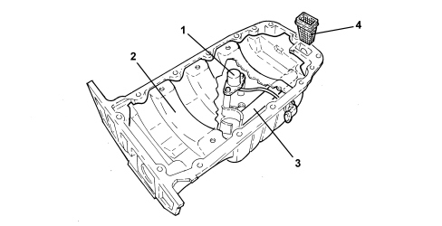

INTRODUCTION - CRANKCASE SUMP AND COVERS
- Path
- Descriptions > 10 ENGINE > 1020 CRANKCASE SUMP AND COVERS > INTRODUCTION - CRANKCASE SUMP AND COVERS
- Kind
- system description
- Applies to
- engines: 1.8; all production periods
- Interactive page
- https://sloeber94.github.io/elrnDB-fCrm/en/#/194001909
Applies to: engines: 1.8; all production periods
ENGINE OIL SUMP
The oil sump is made from aluminium alloy and has a special partition (2) inside to prevent the engine oil from splashing around too much.
The oil temperature and level sensor (1) is fitted inside the sump and is connected to a coupling that interfaces with the Instrument Panel Node (NQS).
A special duct (3), incorporated in the sump wall, interfaces with the oil pump inlet. The usual "intake" is therefore dispensed with facilitating the servicing operations of removing-refitting the oil sump.

1. Oil level and temperature sensor
2. Anti-splash partition
3. Integrated inlet duct
4. Filter
CRANKCASE COVERS
The front crankshaft oil seal takes the form of an oil seal on the front engine cover (engine oil pump casing).
The rear crankshaft seal takes the form of an oil seal fitted on the engine flywheel attachment flange. The lip of the seal is facing the outside and thanks to its helical shape and the vacuum in the crankcase, it is held against the surface of the crankshaft.